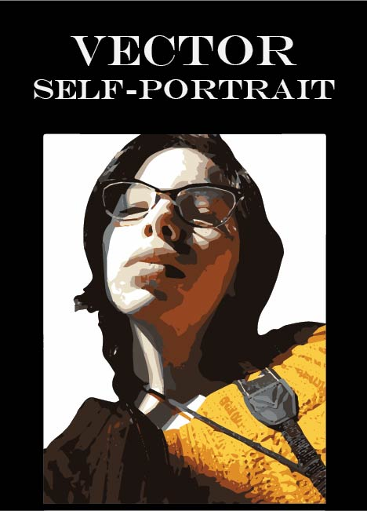

by Sosofarsosofie
Graphic Design Assignment
Adobe Photoshop/Illustrator
Our class was exploring ways to connect Photoshop with Illustrator. With the assistance of our professor we were able to create our own unique self-portraits in vector form.
I used a photo I took from my iPhone. I believed it had enough contrast and, most importantly, attitude I wanted for my portrait. It was a way to explore a different side of me. I associate myself with soft lines and colors. Seeing myself in bold and dramatic colors was an eye opening experience.
